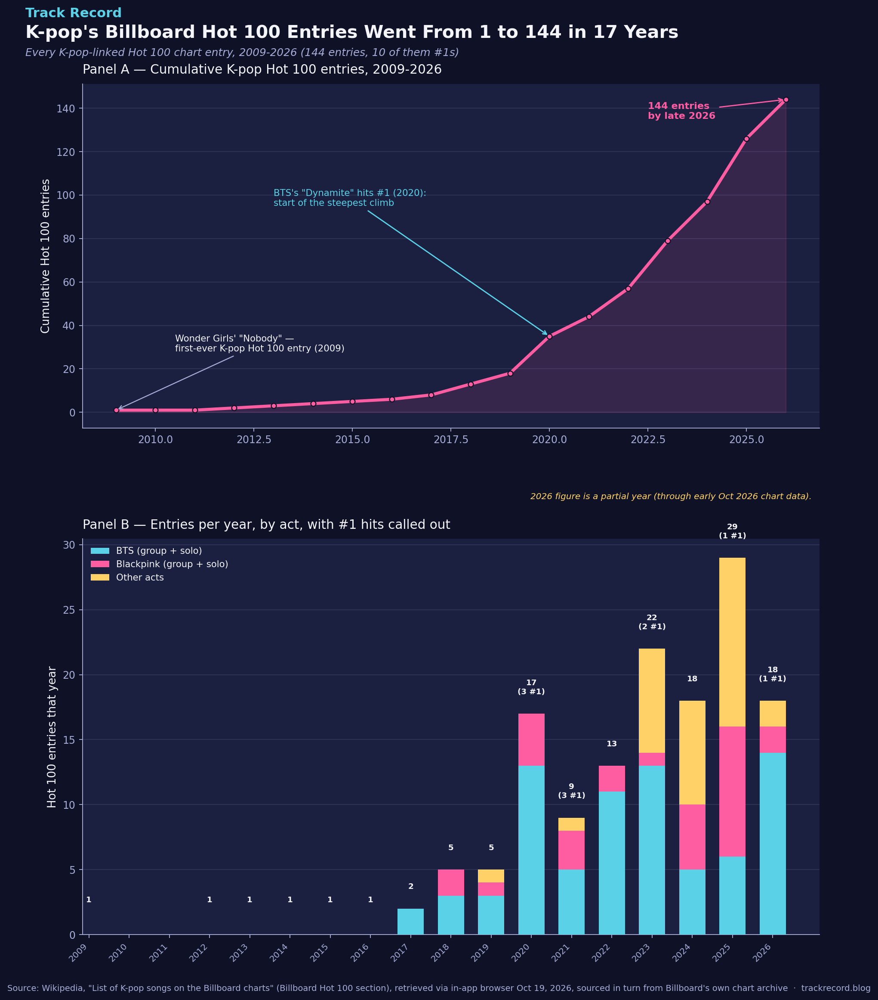

K-pop's Billboard Hot 100 Entries Went From 1 to 144 in 17 Years
Wonder Girls' "Nobody" was the first-ever K-pop song to chart on the Billboard Hot 100, in 2009 — and it peaked at a modest No. 76 for one week. Seventeen years and 144 entries later, K-pop acts have scored 10 different No. 1s, and in 2025 alone they logged 29 separate Hot 100 entries — more than the first 11 years combined.

The dataset
Every song credited to a K-pop act (or featuring one) that has charted on the Billboard Hot 100 — the all-genre, all-format main U.S. singles chart — from the first entry in 2009 through early October 2026. 144 rows total: chart date, artist, title, peak position, and weeks on chart for each one.
Source: Wikipedia's "List of K-pop songs on the Billboard charts," specifically its Billboard Hot 100 section, which the article marks as a "Complete" update window and which itself draws from Billboard's own artist/chart search archive. Retrieved October 19, 2026 via Track Record's in-app browser (direct automated fetches of Wikipedia aren't available from this project's usual tooling, so the page was read manually this time).
Caveats: a small number of entries are act-adjacent rather than pure K-pop — e.g., Western artists featuring a K-pop member (Charlie Puth feat. Jungkook; Coldplay & BTS), and the animated group Huntrix/Saja Boys from the film KPop Demon Hunters, whose music was performed by real K-pop-adjacent vocalists. All are included here because Wikipedia's own list includes them and they reflect real Hot 100 chart data either way — they're flagged individually in the dataset (artist field) so they can be filtered out if a stricter "K-pop act only" definition is wanted. The Wikipedia article itself notes its K-pop artist and chart coverage is not guaranteed 100% exhaustive, so 144 should be read as "at least 144," not a Billboard-certified official count.
The method
- Extracted every row of the Hot 100 (Complete) table from the Wikipedia article: chart date, artist, song title, peak position, weeks on chart.
- Parsed dates into years and computed cumulative entries year over year.
- Tagged each entry as BTS (group or any member's solo work), Blackpink (group or any member's solo work), or "Other acts," to see whether the boom is really just two groups or something broader.
- Counted how many entries peaked at exactly No. 1 each year.
- Cross-checked the #1 count two ways: once by filtering peak_position == 1 programmatically, and once by manually re-reading the raw list for any "1" appearing in the peak column — both methods landed on the same 10 songs.
The actual analysis code:
import pandas as pd
df = pd.read_csv("kpop_hot100_entries_2009_2026.csv") # 144 rows
df["year"] = pd.to_datetime(df["chart_date"]).dt.year
cumulative = df.groupby("year").size().cumsum()
def bucket(artist):
if "BTS" in artist or any(m in artist for m in ["Jungkook","Jimin","J-Hope","Suga","Agust D"]):
return "BTS (group + solo)"
if "Blackpink" in artist or any(m in artist for m in ["Lisa","Rosé","Jennie","Jisoo"]):
return "Blackpink (group + solo)"
return "Other acts"
df["act_bucket"] = df["artist"].apply(bucket)
no1s = df[df["peak_position"] == 1]
print(len(no1s)) # 10 — cross-checked by hand against the raw source table
✓ Cross-check passed: the programmatic count of #1 entries (10) matched a manual re-read of the raw source table. The 10 are: "Savage Love" (BTS feature, 2020), "Dynamite," "Life Goes On," "Butter," "Permission to Dance," "My Universe" (Coldplay & BTS) — all BTS, 2020–21 — plus Jimin's "Like Crazy" and Jungkook's "Seven" (both 2023), Huntrix's "Golden" (2025), and BTS's "Swim" (2026).
What it showed
Panel A: the growth is not a steady climb — it's two distinct phases. From 2009–2019, K-pop picked up roughly one to a handful of Hot 100 entries a year, reaching just 18 cumulative entries after a full decade. Starting in 2020 (BTS's "Dynamite" era), the curve bends sharply upward, adding more entries in the six years since (126) than in the first eleven years combined (18).
Panel B: BTS (group and solo members combined) accounts for the largest single share of entries in most years, but "Other acts" — NewJeans, Stray Kids, Fifty Fifty, Le Sserafim, Twice, Ateez, and the animated Huntrix/Saja Boys from KPop Demon Hunters among them — made up the majority of 2025's record 29 entries, showing this isn't a one-group story anymore. Blackpink (group and solo members Lisa, Rosé, Jennie, Jisoo) has had a steady, separate presence since 2018. Of the 10 total #1s, 6 came from BTS in a tight 2020–2021 window, while the other 4 are spread across different acts and years (2023, 2025, 2026) — suggesting #1s specifically are still rare and concentrated, even as overall chart presence has broadened.